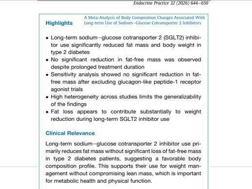

SGLT2 inhibitors (like Jardiance) modestly reduce fat mass while preserving muscle.
On average, patients lost a little over 7lbs compared to controls, with no reduction in fat-free mass.
These results are from a recent meta-analysis and systematic review of randomized trials.
Link to journal paper:
endocrinepractice.orgLink to endocrinepractice.orgendocrinepractice.org
#sglt2HD #weightlossHD #muscleHD
Sodium-glucose cotransporter 2 (SGLT2) inhibitors have been approved and widely used in patients with type 2 #diabetes with profound heart and kidney benefits. They essentially trick your kidneys into losing sugar into the urine, thus also losing calories with #WeightLoss.
This systematic review and meta-analysis randomized controlled trials evaluated the long-term effects of SGLT2 inhibitors on body composition, focusing on fat mass and fat-free mass.
Results: Compared with control groups, SGLT2 inhibitors significantly reduced fat mass while preserving fat-free mass. These findings suggest a potential protective effect on muscle and other lean components
PMID: 41419185

